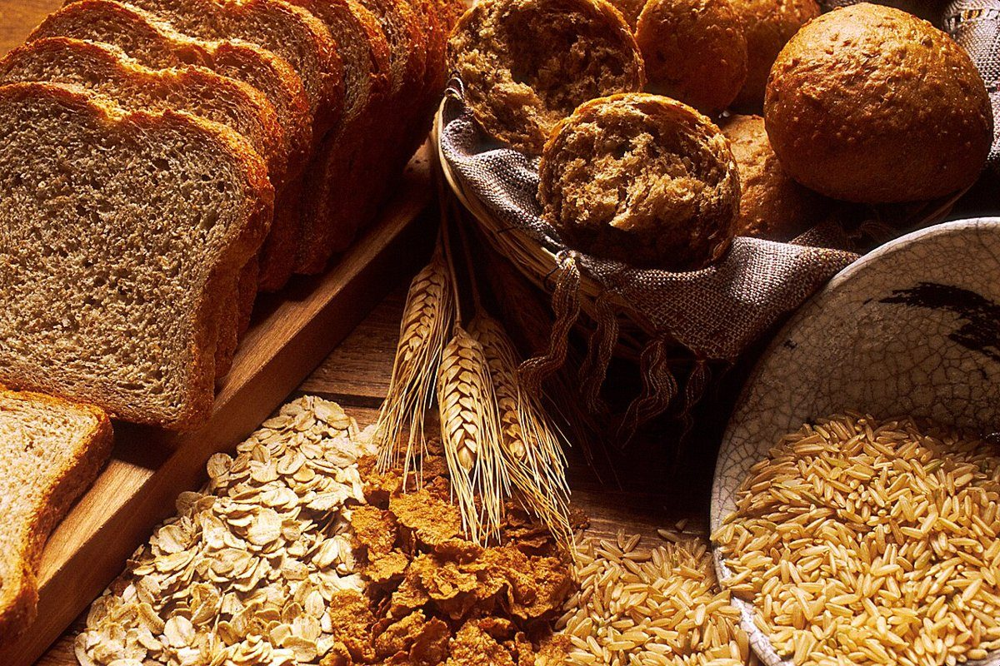

緑コース
COURSE 01
店のこと
お店について確認できているのは、所在地・電話番号・Instagramのアカウントです。
このページの「想像してみる」部分は、制作側が想像して書いたものです。お店の実際の様子・考え・メニューとは関係がありません。
確認できていること
- 店名は「Eiche bakery」、業種はベーカリー
- 所在地は三重県四日市市まきの木台１丁目３４(〒512-1306)
- 電話番号は 059-329-7352
- Instagramのアカウントは @eiche_bakery
- 営業時間・定休日・メニュー・価格・ご予約・駐車場は準備中

想像してみる
「Eiche」というつづりから
由来は分かりません。ドイツ語で樫(オーク)を指す語に似たつづりなので、制作側は、木のぬくもりを思わせる名前かもしれない、と想像しました。パンの種類やこだわりは分かりませんので、ここでは書きません。下の写真は、パンまわりの雰囲気を伝えるためのフリー素材です。


